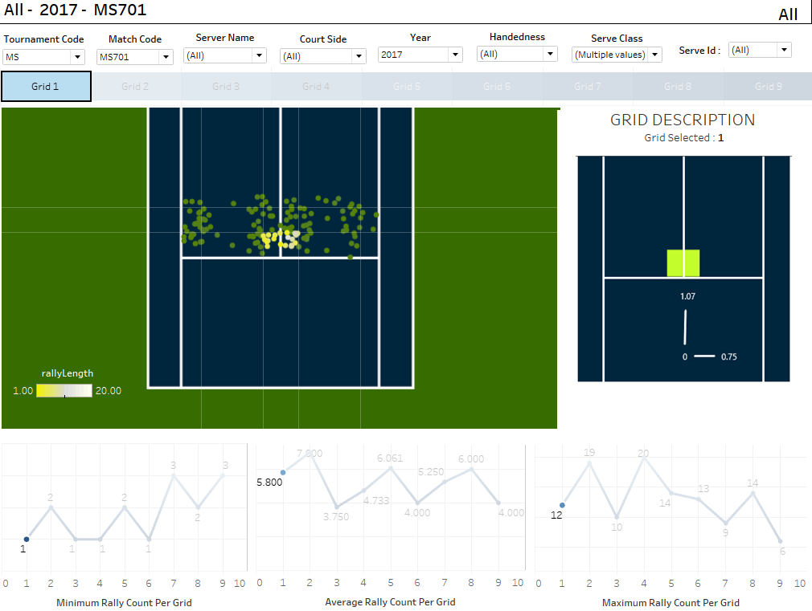

US OPEN 2019
Last summer, I interned for US Open's Analytics team which is a central team taking care of all the other teams of US Open. Being a tennis and a data enthusiast, working with the team was a once in a lifetime opportunity.Tools used: SQL, Python, Tableau, Excel

1. Final Tableau dashboard of the project with player developemt team : Effect of serve placement on Rally Length 
2. Final Tableau dashboard of the project with the Analytics team : Assessing the quality of data received

3. Final Tableau dashboard of the project with the Umpire team : Effective Umpire Crew Allocation

United Nations
For my first and second semester, I worked for the United Nations Development Programme as a Student Data Scientist on various projects. Tools used: Python, Count Vectorizer, nltk, Machine Learning, Tableau

Business Case: To automate the news classification process which was a manual & time consuming task and to add a metric of sentiment that would help UN to take action early on and save millions of lives.
Approach: Extracted manually classified text to use as my training and validation data and webscraped new news articles to use as new test data. After Webscraping the articles from various sources, I pre-processed the text by tokenizing sentences to words by taking n grams into account, removing stopwords, performing stemming and using count vectorizer to convert text to numerical format. Then, I used supervise machine learning algorithms such as Naive Bayes and SVM to classify text into UNDP specified buckets and performed sentiment analysis using nltk vader.
Result: Achieved accuracy more than 90% on out of sample data and delivered results in form of a tableau dashboard
FreeWheel
For my first and second semester, I worked for FreeWheel as a Student Data Scientist for their marketing team. Tools used: Python, Machine Learning, Tableau

Business Case: To optimize advertisement targeting for FreeWheel's marketing team and clients.
Approach: I worked on 2 messy datasets: TV viewing behavior and demographics datasets. As a first step, I tried to understand the structure of data, relationships between columns and data types of columns. Next, I worked on cleaning the data by taking care of missing values and converting data to right datatypes. As, I was planning to use K-means algorithm, I converted all the columns to numeric format and used elbow method to find optimal k value. After performing k means on viewing behavior data and using demographic data to describe the cluster, I used spark on AWS to work on larger data by carrying out the same sequence of steps.
Result: Obtained satisfactory segments such as male sports lovers between 20 and 30